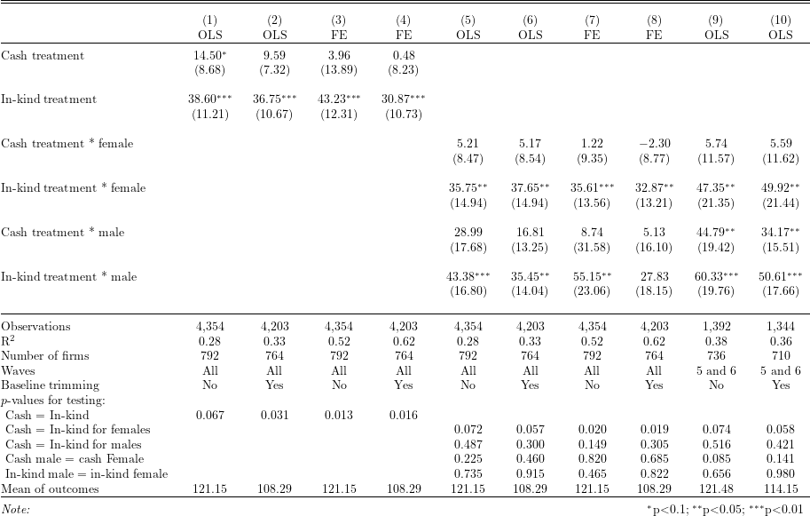

# Install and load packages ---------------
packages <- c(
"tidyverse",
"haven",
"lfe",
"stargazer",
"broom",
"kableExtra",
"XML",
"magrittr",
"pdftools"
)
pacman::p_load(packages, character.only = TRUE, install = TRUE)
# Load an example dataset ---------------
data <- read_dta("data/ReplicationDataGhanaJDE.dta")outcome <- "realfinalprofit"
rhs_var_1 <- c("atreatcash", "atreatequip")
rhs_var_2 <- c("atreatcashfemale", "atreatequipfemale", "atreatcashmale", "atreatequipmale")
control_var_1 <- colnames(data)[grepl("^wave\\d$", colnames(data))]
control_var_2 <- colnames(data)[grepl("^wave\\d(_female)?$", colnames(data))]
control_var_3 <- colnames(data)[grepl("^wave6(_female)?$", colnames(data))]
fe_1 <- "groupnum"
fe_2 <- "sheno"
iv <- "0"
cluster <- "sheno"
create_formula <- function(outcome, rhs_var, control_var, fe, iv, cluster) {
as.formula(
paste(
paste(outcome, paste(c(rhs_var, control_var), collapse = " + "), sep = " ~ "),
fe, iv, cluster, sep = " | "
)
)
}
formulas <- c(
replicate(2, create_formula(outcome, rhs_var_1, control_var_1, fe_1, iv, cluster)),
replicate(2, create_formula(outcome, rhs_var_1, control_var_1, fe_2, iv, cluster)),
replicate(2, create_formula(outcome, rhs_var_2, control_var_2, fe_1, iv, cluster)),
replicate(2, create_formula(outcome, rhs_var_2, control_var_2, fe_2, iv, cluster)),
replicate(2, create_formula(outcome, rhs_var_2, control_var_3, fe_1, iv, cluster))
) %>%
enframe("model_no", "formula")
data_filter_list <- vector(mode = "list", length = 10)
for (i in seq(10)) {
if (i %in% c(1, 3, 5, 7)) {
data_filter_list[[i]] <- filter
} else if (i %in% c(2, 4, 6, 8)) {
data_filter_list[[i]] <- function (x) {filter(x, is.na(trimgroup))}
} else if (i == 9) {
data_filter_list[[i]] <- function (x) {filter(x, wave >= 5)}
} else if (i == 10) {
data_filter_list[[i]] <- function (x) {filter(x, is.na(trimgroup), wave >= 5)}
}
}
test_fun_list <- replicate(5, vector(mode = "list", length = 10), FALSE)
for (i in seq(10)) {
if (i <= 4) {
test_fun_list[[1]][[i]] <- function(x) {
formatC(
waldtest(x, ~ atreatcash - atreatequip)["p.F"],
3, format = "f"
)
}
test_fun_list[[2]][[i]] <- function (x) {return("")}
test_fun_list[[3]][[i]] <- function (x) {return("")}
test_fun_list[[4]][[i]] <- function (x) {return("")}
test_fun_list[[5]][[i]] <- function (x) {return("")}
} else if (i >= 5) {
test_fun_list[[1]][[i]] <- function (x) {return("")}
test_fun_list[[2]][[i]] <- function(x) {
formatC(
waldtest(x, ~ atreatcashfemale - atreatequipfemale)["p.F"],
3, format = "f"
)
}
test_fun_list[[3]][[i]] <- function(x) {
formatC(
waldtest(x, ~ atreatcashmale - atreatequipmale)["p.F"],
3, format = "f"
)
}
test_fun_list[[4]][[i]] <- function(x) {
formatC(
waldtest(x, ~ atreatcashmale - atreatcashfemale)["p.F"],
3, format = "f"
)
}
test_fun_list[[5]][[i]] <- function(x) {
formatC(
waldtest(x, ~ atreatequipmale - atreatequipfemale)["p.F"],
3, format = "f"
)
}
}
}
reg_res <- formulas %>%
mutate(
model = map2(formula, data_filter_list, function(x, y) felm(x, y(data))),
test_1 = map2_chr(model, test_fun_list[[1]], function(x, y) y(x)),
test_2 = map2_chr(model, test_fun_list[[2]], function(x, y) y(x)),
test_3 = map2_chr(model, test_fun_list[[3]], function(x, y) y(x)),
test_4 = map2_chr(model, test_fun_list[[4]], function(x, y) y(x)),
test_5 = map2_chr(model, test_fun_list[[5]], function(x, y) y(x)),
n_firm = map_int(model, function(x) n_distinct(model.frame(x)$sheno)),
mean_outcome = map_chr(model, function(x) formatC(colMeans(model.frame(x)[outcome]), 2, format = "f"))
)
reg_res %>%
pull(model) %>%
stargazer(
dep.var.labels.include = FALSE,
column.labels = c(rep(c("OLS", "OLS", "FE", "FE"), 2), rep("OLS", 2)),
covariate.labels = c(
"Cash treatment",
"In-kind treatment",
"Cash treatment * female",
"In-kind treatment * female",
"Cash treatment * male",
"In-kind treatment * male"
),
keep = c(rhs_var_1, rhs_var_2),
title = "",
add.lines = list(
c("Number of firms", reg_res$n_firm),
c("Waves", rep("All", 8), rep("5 and 6", 2)),
c("Baseline trimming", rep(c("No", "Yes"), 5)),
c("$p$-values for testing:", rep("", 10)),
c("\\ Cash = In-kind", reg_res$test_1),
c("\\ Cash = In-kind for females", reg_res$test_2),
c("\\ Cash = In-kind for males", reg_res$test_3),
c("\\ Cash male = cash Female", reg_res$test_4),
c("\\ In-kind male = in-kind female", reg_res$test_5),
c("Mean of outcomes", reg_res$mean_outcome)
),
type = "latex",
out = "tex/FMQW2014_table3_replicate.tex",
omit.stat = c("adj.rsq", "ser"),
table.layout = "=#c-t-sa-n",
digits = 2
)